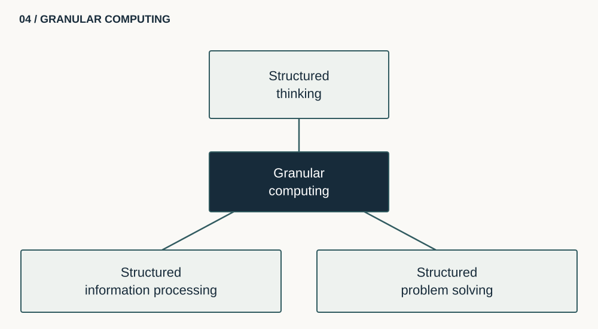

Sami Rojbi · PhD defended in 2022
I held a 50% share of supervision in this international doctoral collaboration. Sami defended his thesis on adapting digital documents for tactile reading in Tunis on 3 December 2022.
Scientific work
I study how people can explore an image or read a map through touch. In other collaborative projects, I work on what facial cues can tell us about driver fatigue and what brain signals reveal about the stages of a hand movement.
Area 1
With Sami Rojbi and Mohamed Salah Gouider, I studied how people can access the content of a web image when they cannot see it.
I adapted the four diagrams from a seminar I gave in the Ingénierie – Cognition – Handicap (ICH) department. Here, granularity means the level of detail retained in a representation.



Area 2

Related work: Parallel Statistical and Machine Learning Methods for Estimation of Physical Load (2018).
Back to research themes ↑Area 3
I contributed to writing and revising a collaborative study of hand movements. The team analysed electroencephalography (EEG) recordings to see how well an algorithm could distinguish events such as touching an object for the first time and lifting it.
The recordings come from the public grasp-and-lift (GAL) dataset compiled by Luciw, Jarocka and Edin. The counts and recording settings below describe the original dataset.
Figures 2 and 8 are by Yuri Gordienko, Nikita Gordienko, Vladyslav Taran, Anis Rojbi, Sergii Telenyk and Sergii Stirenko (2025). A full-resolution copy is available below each preview. Article in Frontiers in Neuroinformatics · CC BY 4.0.

The rows represent six stages of the movement: the hand starts moving (HandStart), a finger first touches the object (FirstDigitTouch), the loading phase begins (BothStartLoadPhase), the object is lifted (LiftOff), replaced (Replace) and released by the fingers (BothReleased). The six columns show the scalp potentials at −100, 0, 100, 150, 250 and 300 milliseconds relative to the event.
Amplitude is expressed in microvolts (µV). Red represents positive potentials, blue negative potentials and white values close to zero. Each row has its own colour scale, so colours should not be compared directly between actions. Contour lines also indicate polarity: dashed lines mark negative values and solid lines mark positive values. For example, at the start of the hand movement the map is mainly negative at 0 ms, with a positive region in the lower part of the map at 100 ms. From the top row down, the scale limits are ±149.9, ±67.9, ±61.3, ±75.4, ±74.1 and ±62.6 µV.

The horizontal axis lists the six stages of the movement. The vertical axis shows mean AUC, the area under the receiver operating characteristic (ROC) curve. This measure describes how well the classifier distinguishes an action across decision thresholds. The mean is taken over the segment lengths tested.
For each action, the middle bar (offset 0.5) is the highest in both panels. The authors judged the difference between the start (offset 0) and the end (offset 1) inconclusive. The effect of added noise depends on the action and the measure used. Hand movement onset has the highest AUC values. First finger contact and the start of loading have the lowest. Table 2 in the article gives the means and standard deviations for segments of 1,000 to 10,000 samples.
Area 4
At ASSETS 2014, Nizar Bouhlel and I presented a tool that helps tactile graphics specialists turn a geographic map into a tactile one.

Starting with a map image, the software separates and simplifies regions and assigns tactile textures. Optical character recognition (OCR) identifies the labels, which are transcribed into braille. The specialist can check and adjust the resulting map.
Publication: Nizar Bouhlel and Anis Rojbi, New tools for automating tactile geographic map translation, ACM ASSETS ’14, 2014, pp. 313–314. Read the ACM record and abstract.
Back to research themes ↑Area 5
In a joint paper for FICC 2018, we proposed combining augmented reality with a brain–computer interface (BCI) to adapt the feedback a person receives.

In the proposed loop, an augmented-reality interface presents visual, auditory or tactile information. A brain–computer interface would record the user’s EEG response. A machine-learning model would interpret that response and feed it back into the choice of cue.
Publication: User-Driven Intelligent Interface on the Basis of Multimodal Augmented Reality and Brain-Computer Interaction for People with Functional Disabilities, in Advances in Information and Communication Networks (2019), pp. 612–631. FICC 2018 conference; first published online on 6 December 2018. Read the Springer chapter.
Back to research themes ↑Scientific supervision
These two doctoral projects concern tactile access to documents and the analysis of healthcare data.
I held a 50% share of supervision in this international doctoral collaboration. Sami defended his thesis on adapting digital documents for tactile reading in Tunis on 3 December 2022.
Since 2024, I have co-supervised her joint PhD at Université Paris 8 and the University of Tunis, with a 25% share of supervision. Her research applies machine learning to health monitoring and prediction. Wiem Ben Ghozzi’s doctoral project.